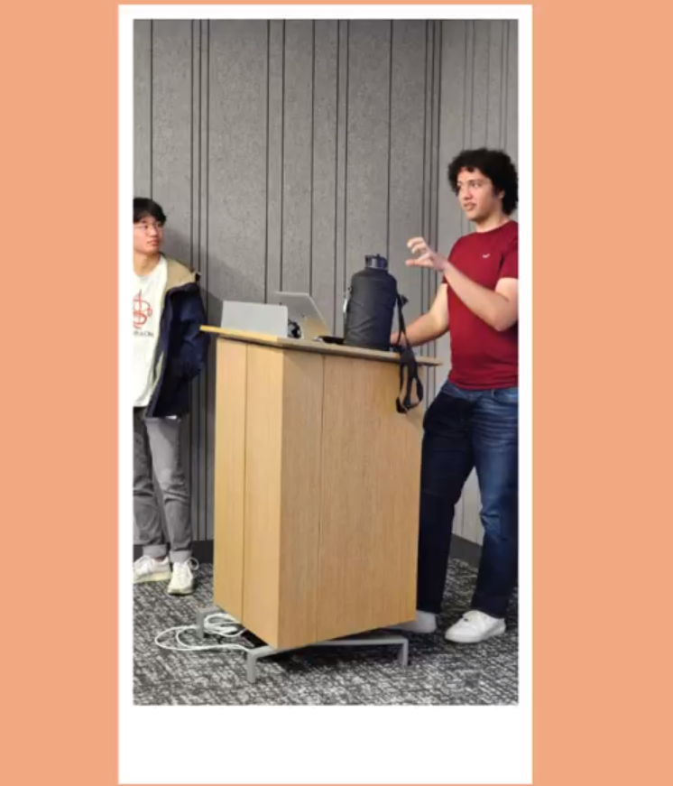

My Service

Most of my service activities revolve around teaching. I have always loved teaching; so it was only natural that, when I first developed my computer science and software engineering skills, I began teaching others through my practice-focused teaching organization, VideoLab. When I first learned to program, I had a hard time getting practice building real-world projects, since most of the lectures and tutorials I watched were exclusively focused on theory. So, to make sure I provided others with the instruction I wanted, I made sure to create practice-focused courses and tutorials that would make sure anyone taking them would get ample experience using the topics taught.
Online instruction was not the only way I got involved with teaching, however. I am currently the Workshops Chair of the Aggie Coding Club, an organization at Texas A&M dedicated to teaching software engineering skills and helping students break into the software industry. In my role, I lead the workshops team and workshop logistics, in addition to leading a few workshops myself each semester. We have taught everything from computer science basics to prototype design. It is currently my second year on the workshops team, and I look forward to teaching and providing more interesting workshops to Aggies!
I enjoy teaching in-person workshops outside of Aggie Coding Club too. During my summer internship, I got involved in a workshop for the Young Women in Tech event, hosted by the RTP Women's Network in North Carolina. During the event, I taught Scratch to middle schoolers to help them get involved in the field and gain exposure to computer science. While both involved in-person computer science workshops, I enjoyed the new experience and challenge that came with teaching a much younger audience than I'm used to.
I have no plans to stop teaching. In the future, I hope to continue leading workshops- both for the Aggie Coding Club and on my own- and expand my online teaching to include other topics and fields.